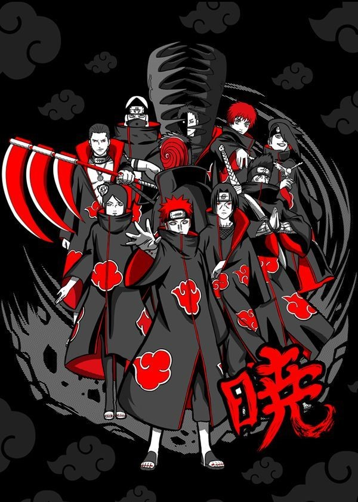

Los Akatsuki son una organización de ninjas renegados en el universo de Naruto, conocidos por sus habilidades excepcionales y por ser criminales buscados de diferentes aldeas. Inicialmente, el objetivo de Akatsuki era traer paz al mundo ninja, pero, bajo el liderazgo de Pain (Nagato) y más tarde de Tobi (Obito Uchiha), se convierte en una organización cuyo fin es recolectar a los Bijū (bestias con cola) para controlar el mundo. Cada miembro tiene una habilidad única y un pasado trágico o sombrío, lo que les da una motivación personal para unirse. La organización incluye personajes notables como Itachi Uchiha, Kisame Hoshigaki, Deidara, Sasori, Hidan, Kakuzu y otros. Todos llevan una distintiva capa negra con nubes rojas, simbolizando sangre y sufrimiento, y comparten una visión despiadada de alcanzar la paz mediante el poder.
